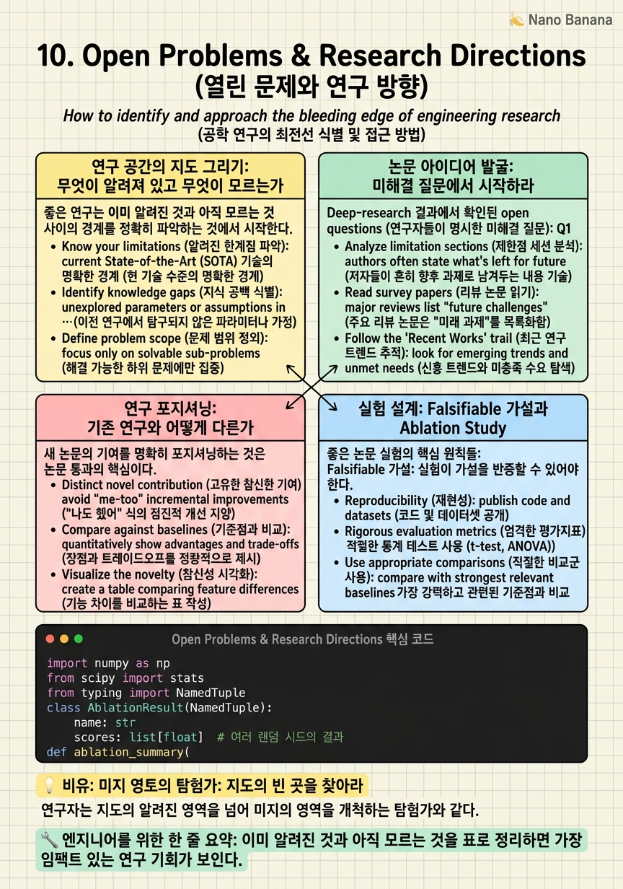

Open Problems & Research Directions

🎯 학습 목표
- ego-exo 분야의 4-5개 핵심 미해결 문제를 정확히 진술할 수 있다
- 기존 연구의 가정과 한계를 비판적으로 분석하는 방법을 적용할 수 있다
- 새 논문의 기여를 명확히 포지셔닝하는 방법을 이해한다
- 연구 가설을 falsifiable한 형태로 설계하고 실험 계획을 수립할 수 있다
강의의 마지막 챕터는 지금까지 배운 내용을 논문 작성이라는 실용적 목표와 연결하는 시간이다. 좋은 논문은 중요하고 미해결된 문제를 발굴하고, 그 문제에 대한 새로운 해결책이나 통찰을 제공하며, 그 주장을 실험적으로 검증한다.
Deep-research로 확인된 ego-exo 분야의 핵심 미해결 문제들:
1. Naive fusion의 실패를 극복하는 아키텍처: EgoExo-Con은 문제를 공식화했지만 명확한 해결책이 없다 2. Foundation model의 크로스뷰 이해 병목: 55.3%의 벽을 깨는 방법 3. Cycle-consistent 대응의 시간적/행동 확장: CCMP가 객체 대응에서 작동하지만 행동 대응으로 확장이 미해결 4. Ego-to-Exo 비디오 합성의 일관성: 생성된 영상의 물리적 일관성 보장 5. 크로스뷰 메모리 추론: EgoExoMem이 정의했지만 55.3%는 충분하지 않다
이 중 어디에 기여할 것인가? 이를 결정하는 체계적 방법을 이 챕터에서 다룬다.
핵심 내용
연구 공간의 지도 그리기: 무엇이 알려져 있고 무엇이 모르는가
좋은 연구는 이미 알려진 것과 아직 모르는 것 사이의 경계를 정확히 파악하는 것에서 시작한다. Ego-exo 분야의 현재 지형을 표로 정리하면:
| 문제 | 현재 상태 | 기회 | |---|---|---| | 데이터셋 구축 | Ego-Exo4D로 잘 커버됨 | 특정 도메인 집중 데이터셋 | | 행동 인식 | 단일 시점 성숙, 크로스뷰는 초기 단계 | 크로스뷰 행동 이해 | | 대응점 학습 | CCMP(2026)로 진전 | 시간적 행동 대응 | | Naive fusion 실패 | EgoExo-Con이 문제 공식화 | 해결 아키텍처 제안 | | MLLM 크로스뷰 | 55.3%로 낮음 | 구조적 개선 | | Novel view synthesis | 초기 단계 | 물리적 일관성 | | 3D 재구성 | 단일 시점 성숙, ego-exo는 초기 | 동적 장면 재구성 | | 멀티모달 통합 | 언어+비디오 초기, 오디오+포즈 미개척 | 모달리티 확장 |
이 표에서 '현재 상태'가 '초기 단계'이고 '기회' 열이 명확한 행들이 가장 임팩트 있는 논문 영역이다.
논문 아이디어 발굴: 미해결 질문에서 시작하라
Deep-research 결과에서 확인된 open questions (연구자들이 명시한 미해결 질문):
Q1. Naive multi-view training 실패를 극복하는 아키텍처는?
EgoExo-Con은 문제를 보였지만 해결책은 없다. 가능한 논문 방향: - Cross-view alignment pre-training이 naive fusion 실패를 얼마나 완화하는가? - Gradient conflict를 줄이는 specific architecture (view-specific adapters)의 효과 - 두 시점의 최적 fusion 전략이 태스크 종류에 따라 어떻게 다른가?
Q2. Foundation model의 크로스뷰 이해를 55.3% 이상으로 올리는 방법은?
가능한 논문 방향: - 크로스뷰 attention mechanism을 기존 MLLM에 삽입하는 plug-in 방법 - Ego-exo 대응점을 token-level에서 명시적으로 모델링하는 방법 - EgoExoMem 특화 instruction tuning 데이터셋 구축
Q3. Cycle-consistent 대응이 행동 수준으로 확장 가능한가?
CCMP는 물체 마스크 대응이지만 행동(keystep) 수준 대응은 미탐구. 가능한 방향: - 행동 구간 대응을 cycle-consistent 방식으로 학습 - 의미적 레이블 없이 ego-exo 행동 alignment 달성 - Temporal cycle consistency loss 설계
연구 포지셔닝: 기존 연구와 어떻게 다른가
새 논문의 기여를 명확히 포지셔닝하는 것은 논문 통과의 핵심이다. 포지셔닝을 위한 체계적 접근:
1. 문제 정의의 명확성: 어떤 정확한 문제를 푸는가? EgoExoMem의 크로스뷰 메모리 추론 vs. EgoExoBench의 크로스뷰 의미 이해 vs. EgoExo-Con의 일관성 — 각각 다른 문제다. 명확하게 하나를 골라야 한다.
2. 기존 방법의 한계 명시: 기존 방법이 왜 이 문제를 못 푸는가? '단순히 concat하면 성능이 낮다'는 관찰이 아니라, 왜 낮은지 메커니즘 수준에서 설명해야 설득력 있다.
3. 기여의 신기성(novelty): 새로운 무엇을 제안하는가? 새 아키텍처, 새 훈련 목적 함수, 새 데이터셋, 새 평가 프레임워크 — 명확한 기여 유형이 있어야 한다.
4. 실험적 검증: 제안한 방법이 기존보다 우월함을 실험으로 보여야 한다. 어떤 벤치마크에서 얼마나 향상됐는가?
포지셔닝 예시 (좋은 예): > 'EgoExo-Con이 naive fusion의 실패를 보였지만 해결책을 제시하지 않았다. 우리는 크로스뷰 alignment pre-training이 이 실패를 X%p 완화할 수 있음을 보이고, 어느 레이어에서 alignment가 가장 중요한지를 분석한다.'
포지셔닝 예시 (나쁜 예): > 'Ego-exo 연구는 중요하다. 우리는 ego와 exo를 함께 사용하는 새로운 방법을 제안한다.'
실험 설계: Falsifiable 가설과 Ablation Study
좋은 논문 실험의 핵심 원칙들:
Falsifiable 가설: 실험이 가설을 반증할 수 있어야 한다. '크로스뷰 alignment pre-training이 naive fusion의 gradient conflict를 감소시킬 것이다'는 falsifiable하다 — gradient cosine similarity를 측정해 검증 가능. '더 좋은 방법을 제안한다'는 falsifiable하지 않다.
ablation study 설계: 논문에서 제안하는 각 구성 요소가 기여하는지를 제거 실험으로 보여야 한다.
예시 ablation 구조:
| 방법 | EgoExoMem | EgoExoBench | CharadesEgo | |---|---|---|---| | Baseline (단일 exo) | 45.0% | 40.0% | 59.5% | | + Ego input (naive) | 51.0% | 43.0% | 51.3% | | + Cross-view alignment | 57.0% | 48.0% | 57.0% | | + View-adaptive gate | 59.0% | 50.0% | 59.0% | | Full model | 61.0% | 52.0% | 61.0% |
각 행이 구성 요소 하나를 추가하며, 전체 향상에서 각 요소의 기여를 볼 수 있다.
비교 방법(baselines) 선택: 최신 방법들과 공정하게 비교해야 한다. EgoExoMem 논문이 보고한 Gemini 2.5 Flash (55.3%)를 baseline으로 포함해야 한다. 이전 시대 방법만 이기면 설득력이 낮다.
통계적 유의성: 여러 run의 평균과 표준 편차를 보고해야 한다. 단일 run 결과는 신뢰도가 낮다.
💡 비유로 이해하기
연구는 미지 영토를 탐험하는 것과 같다. 좋은 탐험가는 먼저 이미 알려진 지형(기존 논문)을 파악하고, 그 지도에서 '여기는 아무도 가보지 않았다'는 빈 곳을 찾는다. 그 빈 곳을 향해 탐험(연구)을 출발한다.
Ego-exo 분야의 현재 지도에는 여러 빈 곳이 있다: naive fusion 실패의 해결 영토, 55.3% 이상의 크로스뷰 이해 영토, 행동 수준 크로스뷰 대응 영토. 탐험가가 이 빈 곳으로 들어가 새로운 발견(논문 기여)을 가져오는 것이 연구의 본질이다.
중요한 것은 '진짜 빈 곳'을 찾는 것이다. 이미 다른 팀이 먼저 탐험했거나(이미 발표된 논문), 탐험할 가치가 없는 불모지(중요하지 않은 문제)를 향해 출발하면 안 된다. 충분한 문헌 조사와 deep-research가 진짜 미개척 영토를 찾는 나침반이 된다.
💻 코드 예시
논문 실험에서 자주 필요한 ablation study 결과 정리 및 통계 검증 코드다. 여러 run의 결과를 받아 신뢰 구간과 유의성을 계산한다.
import numpy as np
from scipy import stats
from typing import NamedTuple
class AblationResult(NamedTuple):
name: str
scores: list[float] # 여러 랜덤 시드의 결과
def ablation_summary(
baseline: AblationResult,
variants: list[AblationResult],
alpha: float = 0.05,
) -> None:
"""Ablation study 결과를 mean±std 및 통계 검증과 함께 출력."""
b_scores = np.array(baseline.scores)
b_mean, b_std = b_scores.mean(), b_scores.std()
print(f"{'Method':<35} {'Mean±Std':<15} {'Delta':<10} {'p-value':<10}")
print("-" * 72)
print(f"{baseline.name:<35} {b_mean:.1f}±{b_std:.1f}")
for v in variants:
v_scores = np.array(v.scores)
v_mean, v_std = v_scores.mean(), v_scores.std()
delta = v_mean - b_mean
# Welch's t-test (분산 다를 수 있어 more robust)
t_stat, p_val = stats.ttest_ind(v_scores, b_scores, equal_var=False)
sig = "*" if p_val < alpha else ""
print(
f"{v.name:<35} {v_mean:.1f}±{v_std:.1f} "
f"{delta:+.1f} {p_val:.3f} {sig}"
)
# 논문 실험 예시: EgoExoMem 정확도 비교
ablation_summary(
baseline=AblationResult(
"Baseline (exo only)",
[45.1, 44.8, 45.3, 44.9, 45.2], # 5 seeds
),
variants=[
AblationResult("+ Ego input (naive)", [51.2, 50.8, 51.5, 50.9, 51.1]),
AblationResult("+ Cross-view align", [57.1, 56.9, 57.4, 56.8, 57.2]),
AblationResult("+ View-adaptive gate", [59.3, 59.0, 59.5, 58.9, 59.2]),
AblationResult("Full model", [61.1, 60.8, 61.4, 60.7, 61.2]),
],
)
Welch's t-test를 사용하는 것은 두 방법의 분산이 다를 수 있기 때문이다. p < 0.05에 별표(*)를 표시해 통계적으로 유의한 향상을 명확히 한다. 논문 submission 시 이런 통계 검증 없이 단일 run 결과만 보고하면 리뷰어의 지적을 받기 쉽다.
🏭 현업에서의 평가
✅ 시니어가 보는 것
- 분야의 공백 지도를 그리고 중요한 미해결 문제를 명확히 특정하는 능력
- 연구 가설을 falsifiable한 형태로 설계하는 방법론적 엄밀성
- ablation study 설계와 통계적 유의성 검증의 중요성 인식
- 기존 방법의 한계를 비판적으로 분석하고 그 한계로부터 새 아이디어를 도출하는 능력
⚠️ 레드 플래그
- 문제를 명확히 특정하지 않고 '전반적인 ego-exo 이해'를 목표로 하는 경우
- ablation study 없이 최종 결과만 보고하는 경우
- 단일 run 결과만 있고 통계적 유의성을 검증하지 않는 경우
- 최신 baselines(Gemini 2.5 Flash 55.3% 등)과 비교하지 않는 경우
🎤 예상 인터뷰 질문
- Ego-exo 분야에서 지금 당장 가장 임팩트 있는 논문을 쓴다면 어떤 문제를 선택하고 왜인가?
- CCMP(CVPR 2026)를 행동 수준 대응으로 확장하려면 어떤 기술적 도전을 극복해야 하는가?
- EgoExoMem에서 Gemini 2.5 Flash의 55.3%를 70% 이상으로 올리기 위해 어떤 아키텍처적 변화가 필요한가?
✨ 핵심 요약
공백 지도가 연구의 출발점
이미 알려진 것과 아직 모르는 것을 표로 정리하면 가장 임팩트 있는 연구 기회가 보인다.
5개 핵심 미해결 문제
Naive fusion 극복, MLLM 55.3% 한계 돌파, 대응의 행동 확장, Ego-Exo 합성 일관성, 메모리 추론 — 이 5개가 현재 필드의 주요 공백이다.
Falsifiable 가설이 좋은 연구의 기초
실험으로 반증 가능한 형태로 가설을 설계해야 의미 있는 과학적 기여가 된다.
Ablation = 기여의 분해
제안 방법의 각 구성 요소가 실제로 도움이 되는지를 제거 실험으로 보여야 한다.
통계적 유의성은 필수
여러 랜덤 시드로 실험하고 t-test로 유의성을 검증해야 신뢰할 수 있는 결과다.
포지셔닝이 논문의 절반
'왜 기존 방법이 안 되는가'와 '우리 방법이 어떻게 다른가'를 메커니즘 수준에서 설명할 수 있어야 한다.
Deep-Research가 방향을 준다
문헌의 open questions 섹션, rejected claims, 검증된 발견들이 새 논문의 출발점이 된다.